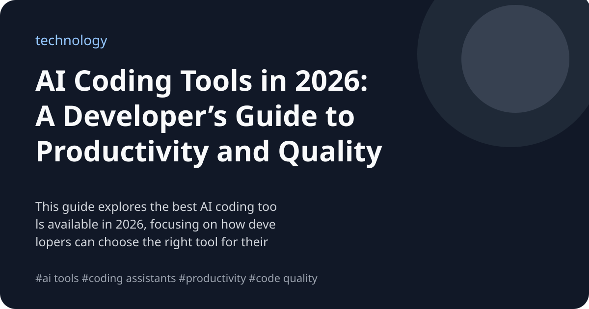

AI Coding Tools in 2026: A Developer’s Guide to Productivity and Quality
This guide explores the best AI coding tools available in 2026, focusing on how developers can choose the right tool for their team and workflow. It addresses trade-offs, security considerations, and productivity impacts, with a critical assessment of reported gains and potential pitfalls.